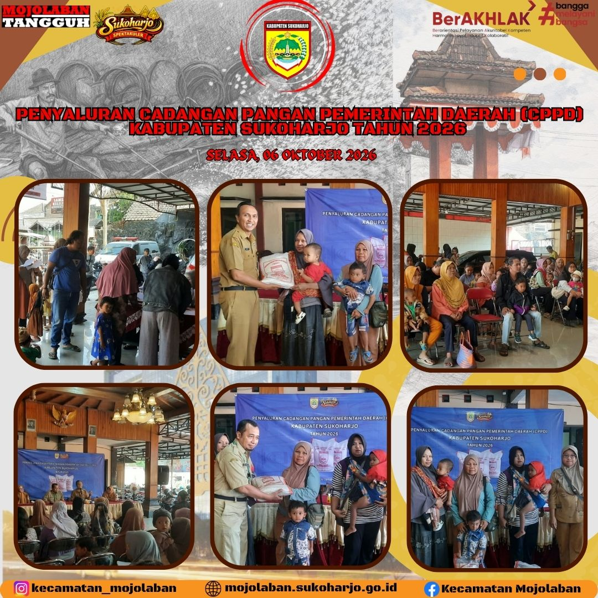

Penyaluran Cadangan Pangan Pemerintah Daerah (CPPD) Kabupaten Sukoharjo
Pemerintah Kabupaten Sukoharjo melalui Kecamatan Mojolaban menyalurkan bantuan cadangan pangan bagi masyarakat penerima manfaat guna menjaga ketahanan pangan keluarga.